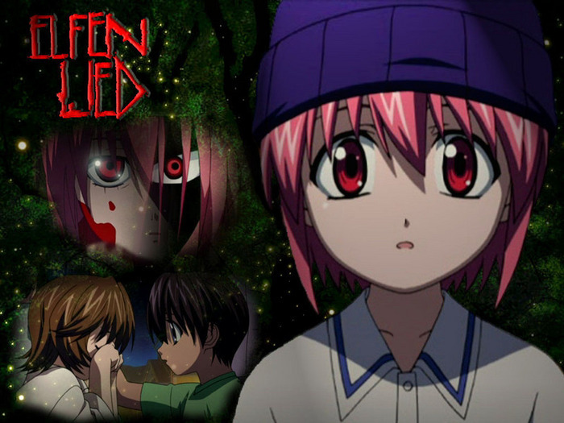

Английское название: Elfen Lied
Русское название: Эльфийская песнь
Число серий: ТВ (13 эп. + DVD-спэшл), 25 мин.
Жанр:Мистика, Боевик, Драма
Создатели:Камбэ Мамору, Окамото Линн
Оценка:9/10
Год выпуска: 2004

Описание аниме: Диклониусы - похожие на людей мутанты, считающиеся Божьими избранниками и способные уничтожить весь человеческий род. Кроме маленьких рожек, напоминающих ушки эльфов, они обладают "векторами" - быстрыми, как свет, невидимыми руками длиной несколько метров. Эти векторы способны наносить ужасные повреждения и перехватывать в полёте пули, а также имеют и другие функции. Нетрудно понять, почему такие особи содержались под строжайшей охраной. Но побег Люси был вдвойне опасен тем, что она, в отличие от других диклониусов, имела способность к деторождению.
При побеге из лаборатории, находящейся на крутом берегу океана, Люси получила снайперскую пулю в голову, но та не помешала ей уйти в воду. Эта, а также некоторые другие причины привели к обострению присущего многим диклониусам душевного недуга - раздвоения личности. В результате, умная, но исключительно злобная Люси вдруг сменилась трогательной очаровашкой Ню с разумом малолетнего ребёнка, чтобы не сказать слабоумной. Именно эта метаморфоза и сбила с толку ребят, которые приютили милую незнакомку, попав в водоворот невероятных событий. Ведь кроткая Ню может в любую минуту обернуться смертоносным демоном Люси...
Кота (Kouta) после долгого отсутствия вернулся в приокеанский город, в котором живёт его двоюродная сестра и подруга детства Юка. Кота собирается учиться в местном колледже. И Юка, с ранних лет неравнодушная к нему, естественно, поступает туда же. Её семья предоставила парню жильё в здании бывшей небольшой гостиницы, при условии, что тот будет за ней присматривать и прибирать комнаты. Когда вечером пара прогуливалась по пляжу, из воды им навстречу вышла нагая девушка с огненными волосами и маленькими рожками, которая не могла вымолвить ни единого слова, кроме трогательного "Ню!". Она выглядела столь беспомощной и невинной, что Кота отвёл незнакомку, которую они с Юкой так и прозвали Ню, к себе домой. Ребята даже не подозревали, что дали убежище смертельно опасной женской особи диклониуса, Люси, по изуродованным трупам двух десятков охранников вырвавшейся из экспериментальной лаборатории и разыскиваемой полицией и спецназом с приказом стрелять на поражение.
Назад